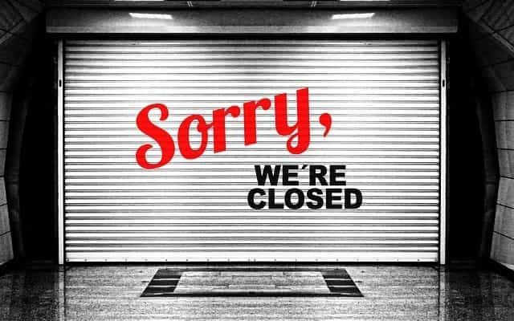

Sponsored Article is ROK's official account that publishes sponsored articles from advertisers. If you are interested hiring a sponsored article for your site, product, or service, visit our advertising page.


The following article is sponsored by Man’s Guide To Well-Being.
Depression is a liar. It has no soul, no conscience. If depression was a person, it would be among the ranks of Bernie Madoff, Frank Abagnale, or Victor Lustig.
Depression will come knocking on your door dressed in a nice suit. It will try to sell you the concepts of self-pity, low self-worth, impatience, and low hope, among others. You must be prepared when depression does show up trying to sell you these lies. If you buy them, it will return day in and day out knowing that you put food on its table and gas in its tank. Depression’s only job is to survive and, when you fall for its sales pitches, you are a means to that end.
One of your greatest defensive measures against this con-artist is asking questions. Ask enough and surely you will start to catch it lying out of its teeth. When you can separate the lies of depression from the truth of reality, you can begin to piece your life back together.
Then you will know the truth, and the truth will set you free – John 8:32
Let’s prepare for the days depression shows up at your door…

Depression will approach you and do its best to convince you that your life sucks. If it successfully makes the sale, it gains a position of authority over your thoughts.
You’ve probably already bought the premium version of this sales package. When unboxed, it looks like a victim-mindset: “Poor me. I’ll feel sorry for myself, continue my behavior, and wish problems away.”
Buyer Beware. This isn’t you.
This is depression telling your subconscious what to say. It then repackages it as if it was a thought of your own. From there, it nets you in a cycle of temptation and torment.
First, depression tempts you with pity and presents instant gratification as the best fix. Then come the side effects of self-pity induced instant gratification: weight gain, low energy, health problems, debt, etc. More things to feel pity over.
Just as the sun rises, this tormenting cycle continues unless noticed and acted upon.
Here are multiple sets of questions to break down the lies of self-pity. Each question will break it down like a Russian nesting doll, exposing its inner content.
(This article is an excerpt from Man’s Guide to Well-Being: Take Control of Your Mood and Life.)
Depression wants to taint your self-perception. It knows that the less you believe in yourself; the less confidence you have, the further away change is.
This sales package hides an obvious fact: we were all born for great things. However, the low confidence depression sells us limits our efforts and it is our lowered efforts that destine us for failure. Then, our inevitable failure lowers our self-worth and self-confidence even more. Eventually, we stop trying new and better things completely.
Hopefully, you are starting to see why depression may as well be selling you heroin. It grasps your psychological reasoning and skews life results, forcing you into a depression addiction.
Here are multiple sets of questions to combat this. Each question will act as a full swing of a battering ram, destined to bust open the door of truth and free you faster than a 12-step program.
To read sales packages three (Impatience)and four (Low Hope), check out Man’s Guide to Well-Being. If you are depressed, this book is your solution.